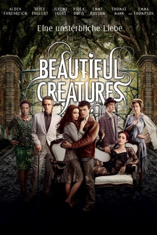

#6851 Beautiful Creatures - Eine unsterbliche Liebe
Alternativ: Beautiful Creatures
 
 IMDB-Wertung: 6.2 / 10
IMDB-Wertung: 6.2 / 10  Metascore: 0
Metascore: 0 
Es ist Liebe noch vor dem ersten Blick: Ethan verliebt sich bereits in seinen Träumen in Lena und staunt nicht schlecht, als sie schließlich tatsächlich als neue Mitschülerin vor ihm steht und tatsächlich das gleiche für ihn empfindet. Allerdings stammt Lena aus einer Familie von sogenannten Castern oder auch Hexen und besitzt übernatürliche Kräfte. Erschwerend für die junge Beziehung kommt hinzu, dass Lena mit einem Zauber belegt ist und sich bis zu ihrem 16. Geburtstag zwischen der dunklen und der hellen Seite entscheiden muss.
Jahr: 2013
Dauer: 123 Minuten
FSK: 12
Land: USA Studio: Warner Bros.Tonspuren: DTS - ,
Untertitel: Deutsch,
Auflösung: 1080p (1920x800) Größe: 6912 MB
Genre: Drama, Fantasy, Liebe
Regisseur: Richard LaGravenese
Drehbuch: Richard LaGravenese
Soundtrack:
Darsteller:
 Alden Ehrenreich als Ethan Wate
Alden Ehrenreich als Ethan Wate- Alice Englert als Lena Duchannes
 Jeremy Irons als Macon Ravenwood
Jeremy Irons als Macon Ravenwood Viola Davis als Amma
Viola Davis als Amma Emmy Rossum als Ridley Duchannes
Emmy Rossum als Ridley Duchannes Thomas Mann als Link
Thomas Mann als Link Emma Thompson als Mrs. Lincoln / Sarafine
Emma Thompson als Mrs. Lincoln / Sarafine Eileen Atkins als Gramma
Eileen Atkins als Gramma Margo Martindale als Aunt Del
Margo Martindale als Aunt Del Zoey Deutch als Emily Asher
Zoey Deutch als Emily Asher- Tiffany Boone als Savannah Snow
 Rachel Brosnahan als Genevieve Duchannes
Rachel Brosnahan als Genevieve Duchannes- Kyle Gallner als Larkin Ravenwood
 Pruitt Taylor Vince als Mr. Lee
Pruitt Taylor Vince als Mr. Lee- Robin Skye als Mrs. Hester
- Randy Redd als Reverend Stephens
 Lance E. Nichols als Mayor Snow
Lance E. Nichols als Mayor Snow- Leslie Castay als Principal Herbert
- Sam Gilroy als Ethan Carter Wate
- Cindy Hogan als Mrs. Asher
- Bryan Adrian als Billy , uncredited
- Camille Balsamo als Katherine Duchannes , uncredited
- Tim Bell als Deputy Sheriff , uncredited
- Camille Blouin als Spectator , uncredited
- Colby Boothman als Nerd #2 , uncredited
- Cameron M. Brown als Little Ninja , uncredited
- Milton Crosby als Earl , uncredited
 J.D. Evermore als Mitchell Wate , uncredited
J.D. Evermore als Mitchell Wate , uncredited Lucy Faust als Juliette Duchannes , uncredited
Lucy Faust als Juliette Duchannes , uncredited Andrea Frankle als Lila Wate , uncredited
Andrea Frankle als Lila Wate , uncredited Philippe Radelet als Suttler , uncredited
Philippe Radelet als Suttler , uncredited- Russ Skains als Castor , uncredited
- Jim Sojka als Townsfolk , uncredited
 Jordan Sudduth als Confederate Soldier , uncredited
Jordan Sudduth als Confederate Soldier , uncredited Nathan Alan Thomas als Union Soldier , uncredited
Nathan Alan Thomas als Union Soldier , uncredited Justine Wachsberger als Justine Duchannes , uncredited
Justine Wachsberger als Justine Duchannes , uncredited- Julia Faye West als Duchanness , uncredited
- Rachel G. Whittle als Caster , uncredited
- Gwendolyn Mulamba als Mrs. Snow
- Cole Burden als Union Captain
- Billy Wheelan als Union Soldier
- Christopher Darby als Train Teen
- John R. Bennett II als Town Resident , uncredited
- Noelle Boggio als Spectator , uncredited
 Beau Brasseaux als Caster Shades , uncredited
Beau Brasseaux als Caster Shades , uncredited- Edward J. Clare als Spectator , uncredited
- Lindsay Clift als Althea Duchannes , uncredited
- Jacob Coco als Union Soldier , uncredited
- Emily D. Haley als Town Resident , uncredited
- Charles Hunt als Spectator , uncredited
Datei: X:\2013(A-F)\Beautiful Creatures - Eine unsterbliche Liebe (2013, FSK12, 1920x800).mkv seit 04.09.2017
Festplatte: HD 2012(N-Z)-2013(A-H)
 Es gibt insgesamt 127 Filme in der Gruppe '2013(A-F)'
Es gibt insgesamt 127 Filme in der Gruppe '2013(A-F)'